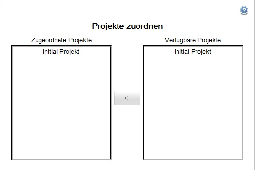

Projekte zuordnen
Die Projektzuordnung eines Teams gibt diesem das Recht, ein Projekt zu bearbeiten.
Um einem Team diese Berechtigung zu zuweisen, wählen Sie im linken Fenster ein Team aus und klicken auf "Projekte zuordnen". Im darauf folgenden Dialog wählen Sie die Projekte auf der rechten Seite aus, welche das Team bearbeiten darf und ordnen Sie über den Button  dem Team zu.
dem Team zu.
Projekte, welche auf der rechten Seite stehen, sind dem Team bereits zugeordnet und können von diesem bearbeitet werden.

Created with the Personal Edition of HelpNDoc: Create HTML Help, DOC, PDF and print manuals from 1 single source